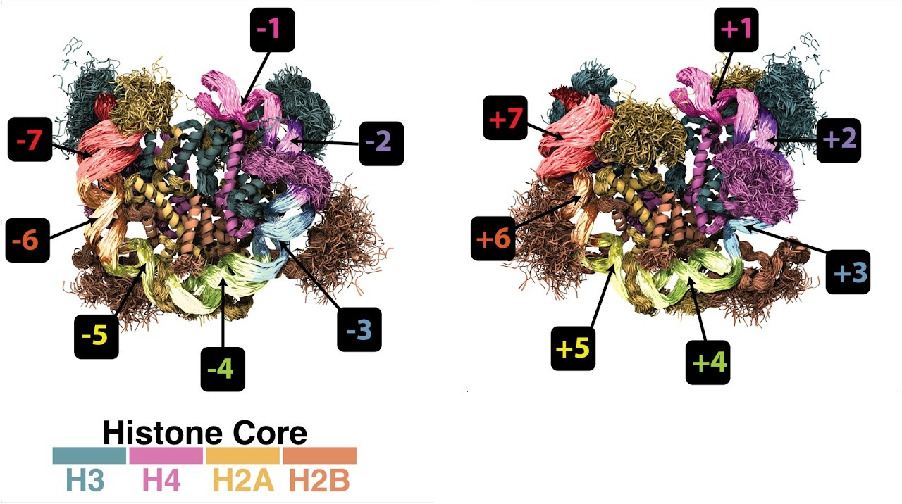

<meta charset="utf-8">
<meta name="viewport" content="width=device-width, initial-scale=1, viewport-fit=cover">
<title>Loverde Laboratory | Computational Biophysics of Chromatin, CUNY</title>
<meta name="description" content="Loverde Laboratory (Sharon M. Loverde), College of Staten Island and CUNY Graduate Center: molecular dynamics simulations of nucleosomes, chromatin, peptide condensates, and soft biological materials.">
<link rel="icon" type="image/jpeg" href=""><link rel="canonical" href="https://cuny-csi-loverde-laboratory.github.io/">
<meta property="og:type" content="website">
<meta property="og:site_name" content="Loverde Laboratory">
<meta property="og:title" content="Loverde Laboratory | Computational Biophysics of Chromatin, CUNY">
<meta property="og:description" content="Loverde Laboratory (Sharon M. Loverde), College of Staten Island and CUNY Graduate Center: molecular dynamics simulations of nucleosomes, chromatin, peptide condensates, and soft biological materials.">
<meta property="og:url" content="https://cuny-csi-loverde-laboratory.github.io/">
<meta name="twitter:card" content="summary">
<meta name="claude:viewport-fit-sides" content="cover">
<link rel="preconnect" href="https://fonts.googleapis.com">
<link rel="preconnect" href="https://fonts.gstatic.com" crossorigin>
<link rel="stylesheet" href="https://fonts.googleapis.com/css2?family=IBM+Plex+Mono:wght@400;500&family=IBM+Plex+Sans:ital,wght@0,400;0,500;0,600;0,700;1,400&family=IBM+Plex+Serif:ital,wght@0,400;1,400&display=swap">
<style>
/* Layout: single centered reading column (~680px) under a slim sticky bar; one illustrated plate on Home; views switch by #hash */
:root{
  --bg:#ffffff;
  --fg:#16191d;
  --muted:#5b6470;
  --rule:#e3e7ec;
  --tint:#f4f7f9;
  --accent:#0b5f86;      /* deep harbor blue */
  --accent-soft:#d8e9f2;
  --h3:#5b8bb8; --h4:#6aa67f; --h2a:#d6a64a; --h2b:#c97a86; --dna:#2d3a48; --dna2:#8aa0b5; --bead:#c7d3de;
  --sans:"IBM Plex Sans",system-ui,-apple-system,"Segoe UI",sans-serif;
  --serif:"IBM Plex Serif",Georgia,serif;
  --mono:"IBM Plex Mono",ui-monospace,Menlo,monospace;
  --col:680px;
}
@media (prefers-color-scheme: dark){:root:not([data-theme="light"]){
  --bg:#0f1317; --fg:#e7ebef; --muted:#9aa5b1; --rule:#252c34; --tint:#161c22;
  --accent:#6cb8de; --accent-soft:#163142;
  --h3:#6f9ccc; --h4:#76b58c; --h2a:#d9b05d; --h2b:#d48c98; --dna:#dfe7ee; --dna2:#7690a8; --bead:#24303b;
  color-scheme:dark}}
:root[data-theme="dark"]{
  --bg:#0f1317; --fg:#e7ebef; --muted:#9aa5b1; --rule:#252c34; --tint:#161c22;
  --accent:#6cb8de; --accent-soft:#163142;
  --h3:#6f9ccc; --h4:#76b58c; --h2a:#d9b05d; --h2b:#d48c98; --dna:#dfe7ee; --dna2:#7690a8; --bead:#24303b;
  color-scheme:dark}

*{box-sizing:border-box}
body{background:var(--bg);color:var(--fg);font-family:var(--sans);font-size:17px;line-height:1.65;-webkit-font-smoothing:antialiased}
body::before{content:"";position:fixed;inset:0 0 auto;height:env(safe-area-inset-top,0px);z-index:10;background:var(--bg)}
a{color:var(--accent);text-decoration:none;border-bottom:1px solid var(--accent-soft)}
a:hover{border-bottom-color:var(--accent)}
a:focus-visible,button:focus-visible{outline:2px solid var(--accent);outline-offset:3px;border-radius:2px}

/* top bar */
.bar{position:sticky;top:env(safe-area-inset-top,0px);z-index:5;background:color-mix(in srgb,var(--bg) 92%,transparent);backdrop-filter:blur(8px);border-bottom:1px solid var(--rule)}
.bar-in{max-width:1080px;margin:0 auto;display:flex;align-items:center;justify-content:space-between;gap:16px;flex-wrap:wrap;
  padding-block:14px;padding-left:max(24px,env(safe-area-inset-left,0px));padding-right:max(24px,env(safe-area-inset-right,0px))}
.brand{font-weight:700;letter-spacing:-.01em;color:var(--fg);border:0;font-size:16px}
.brand span{font-weight:400;color:var(--muted)}
nav{display:flex;gap:4px 18px;flex-wrap:wrap}
nav a{color:var(--muted);border:0;font-size:14.5px;padding:2px 0}
nav a:hover{color:var(--fg)}
nav a[aria-current="page"]{color:var(--accent);font-weight:500}

/* column */
main{max-width:calc(var(--col) + 48px);margin:0 auto;padding-block:56px 40px;padding-left:max(24px,env(safe-area-inset-left,0px));padding-right:max(24px,env(safe-area-inset-right,0px))}
h1{font-size:clamp(34px,6vw,46px);line-height:1.1;letter-spacing:-.025em;margin:0 0 14px;font-weight:700;text-wrap:balance}
h2{font-size:24px;letter-spacing:-.015em;margin:56px 0 18px;padding-bottom:10px;border-bottom:1px solid var(--rule);font-weight:600;text-wrap:balance}
h3{font-size:18px;margin:0 0 4px;font-weight:600;letter-spacing:-.005em}
p{margin:0 0 16px}
.lede{font-size:19px;color:var(--muted);max-width:36em;margin-bottom:32px}
.eyebrow{font-family:var(--mono);font-size:12px;letter-spacing:.12em;text-transform:uppercase;color:var(--muted);margin-bottom:12px}
.more{font-size:15px;margin:-6px 0 18px}
.view[hidden]{display:none!important}

/* plate */
figure{margin:0 0 8px}
.hero{width:100%;height:auto;max-width:100%;display:block;border-radius:4px;background:#fff}
.plate{width:100%;aspect-ratio:2.6/1;max-width:100%;display:block;border-radius:4px;background:var(--tint)}
figcaption{font-size:12.5px;font-style:italic;color:var(--muted);margin-top:8px}

/* research list */
.areas{display:grid;gap:22px;margin:0;padding:0;list-style:none}
.areas li{display:grid;grid-template-columns:14px 1fr;gap:14px}
.swatch{width:10px;height:10px;border-radius:50%;margin-top:9px}
.areas p{margin:0;color:var(--fg)}
.areas strong{font-weight:600}
.method{font-family:var(--mono);font-size:12.5px;color:var(--muted);margin-top:6px!important;letter-spacing:.01em}

/* stats strip */
.facts{display:grid;grid-template-columns:repeat(3,1fr);gap:0;border-top:1px solid var(--rule);border-bottom:1px solid var(--rule);margin:36px 0 0}
.facts div{padding:16px 0 14px}
.facts div+div{padding-left:18px;border-left:1px solid var(--rule)}
.facts b{display:block;font-size:15px;font-weight:600}
.facts span{font-size:13.5px;color:var(--muted);line-height:1.45;display:block}

/* CTA */
.cta{display:flex;gap:12px;flex-wrap:wrap;margin-top:20px}
.btn{font-family:var(--mono);font-size:13px;letter-spacing:.08em;text-transform:uppercase;padding:11px 18px;border:1px solid var(--fg);color:var(--fg);border-radius:2px;background:transparent;cursor:pointer}
.btn.primary{background:var(--fg);color:var(--bg)}
.btn:hover{border-color:var(--accent);color:var(--accent);background:transparent}
.btn.primary:hover{background:var(--accent);color:var(--bg);border-color:var(--accent)}

/* news */
.news{list-style:none;padding:0;margin:0;display:grid;gap:12px}
.news li{display:grid;grid-template-columns:92px 1fr;gap:16px;font-size:15.5px}
.news time{font-family:var(--mono);font-size:12.5px;color:var(--muted);padding-top:3px;font-variant-numeric:tabular-nums}

/* people */
.pi{display:grid;grid-template-columns:132px 1fr;gap:24px;align-items:start}
.avatar{width:132px;aspect-ratio:4/5;overflow:hidden;border-radius:4px;background:var(--tint);display:grid;place-items:center;font-family:var(--serif);font-size:40px;color:var(--accent);border:1px solid var(--rule)}
.pi .role{color:var(--muted);font-size:15px;margin:0 0 12px}
.cv{font-size:14.5px;color:var(--muted);display:grid;gap:4px;margin:0;padding:0;list-style:none}
.roster{display:grid;grid-template-columns:repeat(2,minmax(0,1fr));gap:26px 32px}
.person.noimg{display:block}
.person{min-width:0;display:grid;grid-template-columns:96px 1fr;gap:16px;align-items:start}
.portrait{width:96px;aspect-ratio:4/5;border-radius:3px;background:var(--tint);border:1px solid var(--rule);overflow:hidden;display:grid;place-items:center;font-family:var(--serif);font-size:26px;color:var(--accent)}
.portrait img,.avatar img{width:100%;height:100%;object-fit:cover;display:block}
.group{margin:8px 0 0}
.group .ph{width:100%;aspect-ratio:1280/556;max-width:100%;background:var(--tint);border:1px dashed var(--rule);border-radius:4px;display:grid;place-items:center;color:var(--muted);font-family:var(--mono);font-size:12px;letter-spacing:.08em;text-transform:uppercase;overflow:hidden}
.group .ph img{width:100%;height:100%;object-fit:cover}
.person .meta{font-size:14px;color:var(--muted);margin:0 0 6px}
.person .proj{font-size:14.5px;margin:0}
.tag{display:inline-block;font-family:var(--mono);font-size:11px;letter-spacing:.06em;text-transform:uppercase;padding:2px 7px;border-radius:2px;background:var(--accent-soft);color:var(--accent);margin-left:6px;vertical-align:2px}
.alumni{width:100%;border-collapse:collapse;font-size:14.5px}
.alumni td{padding:10px 0;border-bottom:1px solid var(--rule);vertical-align:top}
.alumni td:first-child{font-weight:500;padding-right:16px;width:40%}
.alumni td:last-child{color:var(--muted)}
.tablewrap{overflow-x:auto}
.repos td{vertical-align:top}
.repos td:first-child{width:auto;font-weight:500}
.repos td:nth-child(2){color:var(--muted);white-space:nowrap;padding-right:16px}
.repos .repo{display:block;font-family:var(--mono);font-size:11.5px;font-weight:400;margin-top:2px;word-break:break-all}
.repos .lk{white-space:nowrap;text-align:right;font-family:var(--mono);font-size:12px}
.repos .lk a{border:0;margin-left:12px}
.links a.code{color:var(--fg)}
.courses td:first-child,.terms td:first-child{font-family:var(--mono);font-size:13px;width:30%;white-space:nowrap}
.terms td:first-child{font-family:var(--sans);font-size:14.5px}
.grants td:first-child{width:60%}
.events li{grid-template-columns:92px 1fr}

/* pubs */
.pubs{list-style:none;padding:0;margin:0;display:grid;gap:22px;counter-reset:p}
.pubs li{display:grid;grid-template-columns:44px 1fr;gap:10px}
.pubs li::before{counter-increment:p;content:counter(p,decimal-leading-zero);font-family:var(--mono);font-size:12.5px;color:var(--muted);padding-top:4px;font-variant-numeric:tabular-nums}
.pubs .t{font-weight:500;display:block;line-height:1.45}
.pubs .a{font-size:14.5px;color:var(--muted);display:block}
.pubs .j{font-size:14.5px}
.pubs .j em{font-family:var(--serif)}
.links{display:flex;gap:14px;flex-wrap:wrap;margin-top:4px;font-family:var(--mono);font-size:12px;letter-spacing:.04em}
.links a{border:0}
.links a::after{content:" ↗"}
.me{text-decoration:underline;text-decoration-color:var(--rule);text-underline-offset:3px;color:var(--fg)}
.u{font-size:12px;color:var(--muted)}

/* software */
.tool{border:1px solid var(--rule);border-radius:4px;padding:20px 22px;margin-bottom:16px}
.tool .k{font-family:var(--mono);font-size:12px;color:var(--muted);letter-spacing:.06em;text-transform:uppercase}
.tool h3{font-size:20px;margin-top:4px}
.chips{display:flex;flex-wrap:wrap;gap:8px;margin:0;padding:0;list-style:none}
.chips li{font-family:var(--mono);font-size:12.5px;padding:5px 10px;border:1px solid var(--rule);border-radius:2px;color:var(--muted)}
.chips li:has(a){padding:0}
.chips a{display:block;padding:5px 10px;color:var(--muted);border:0}
.chips a:hover{color:var(--accent)}
.chips li:hover{border-color:var(--accent)}

/* contact */
.addr{display:grid;grid-template-columns:repeat(2,minmax(0,1fr));gap:24px;font-size:15.5px}
.addr .lbl{font-family:var(--mono);font-size:11.5px;letter-spacing:.1em;text-transform:uppercase;color:var(--muted);display:block;margin-bottom:4px}
.copy{display:inline-flex;gap:10px;align-items:center;flex-wrap:wrap}
.copy code{font-family:var(--mono);font-size:14px;background:var(--tint);padding:4px 8px;border-radius:2px;user-select:all}
.copy button{font-family:var(--mono);font-size:11.5px;letter-spacing:.06em;text-transform:uppercase;background:none;border:1px solid var(--rule);color:var(--muted);padding:4px 9px;border-radius:2px;cursor:pointer}
.copy button:hover{color:var(--accent);border-color:var(--accent)}

footer{border-top:1px solid var(--rule);margin-top:40px}
.foot{max-width:calc(var(--col) + 48px);margin:0 auto;display:flex;justify-content:space-between;gap:12px;flex-wrap:wrap;font-size:13px;color:var(--muted);
  padding-block:22px 34px;padding-left:max(24px,env(safe-area-inset-left,0px));padding-right:max(24px,env(safe-area-inset-right,0px))}
.foot .m{font-family:var(--mono);font-size:11.5px;letter-spacing:.12em;text-transform:uppercase}

@media (max-width:620px){
  body{font-size:16px}
  main{padding-block:36px 28px}
  .pi{grid-template-columns:1fr}
  .avatar{width:96px;font-size:30px}
  .roster,.addr{grid-template-columns:1fr}
  .facts{grid-template-columns:1fr}
  .facts div+div{padding-left:0;border-left:0;border-top:1px solid var(--rule)}
  .news li{grid-template-columns:1fr;gap:0}
  .pubs li{grid-template-columns:1fr}
  .pubs li::before{padding:0}
  nav{gap:4px 16px}
}
@media (prefers-reduced-motion:no-preference){.view{animation:in .35s ease both}@keyframes in{from{opacity:.4;transform:translateY(4px)}to{opacity:1;transform:none}}}
</style>

<header class="bar">
  <div class="bar-in">
    <a class="brand" href="#home" style="display:inline-flex;align-items:center">Loverde<span>Lab</span></a>
    <nav aria-label="Main">
      <a href="#research">Research</a>
      <a href="#people">People</a>
      <a href="#publications">Publications</a>
      <a href="#code">Code &amp; Data</a>
      <a href="#teaching">Teaching</a>
      <a href="#outreach">Outreach</a>
      <a href="#news">News</a>
      <a href="#funding">Funding</a>
      <a href="#join">Join</a>
    </nav>
  </div>
</header>

<main>

<!-- HOME -->
<section class="view" id="v-home">
  <h1>Loverde Laboratory</h1>
  <p class="lede">Computational biophysics of chromatin and soft biological matter at the <a href="https://www.csi.cuny.edu/" target="_blank" rel="noopener">College of Staten Island</a> and the <a href="https://www.gc.cuny.edu/" target="_blank" rel="noopener">CUNY Graduate Center</a>.</p>

  <figure>
    <canvas class="plate" id="plate" aria-label="Illustration of a chromatin fiber: nucleosomes with DNA wrapped around histone cores, connected by linker DNA, on a field of coarse-grained solvent beads" role="img"></canvas>
    <figcaption>Nucleosomes along a chromatin fiber, drawn in coarse-grained bead style. Histone cores: H3 blue, H4 green, H2A gold, H2B rose.</figcaption>
  </figure>

  <h2>Overview</h2>
  <p>We use all-atom and coarse-grained molecular dynamics to understand how biological assemblies hold together, move, and fall apart. Our central system is the nucleosome, the basic packaging unit of the genome. We ask how histone tails, DNA sequence, histone variants, and cancer-associated mutations change its dynamics, and how those changes are communicated across the structure. The same multiscale toolkit drives our work on peptide condensates and supramolecular materials for drug delivery.</p>
  <p>Our simulations run on the <a href="https://www.csi.cuny.edu/academics-and-research/research-centers/cuny-high-performance-computing-center" target="_blank" rel="noopener">CUNY High Performance Computing Center</a>, <a href="https://access-ci.org" target="_blank" rel="noopener">NSF ACCESS</a>, and the <a href="https://www.psc.edu/resources/anton/" target="_blank" rel="noopener">Anton&nbsp;3</a> special-purpose supercomputer at the <a href="https://www.psc.edu" target="_blank" rel="noopener">Pittsburgh Supercomputing Center</a>. We work closely with experimental groups, and we release code and, where possible, trajectories with most of our papers.</p>

  <div class="facts">
    <div><b>Anton 3</b><span>Long-timescale all-atom simulations of nucleosomes</span></div>
    <div><b>Open science</b><span>Code on GitHub and trajectories on Zenodo for most papers</span></div>
    <div><b>CUNY training</b><span>Undergraduates through PhD in Chemistry, Biochemistry, Physics</span></div>
  </div>

  <h2>Research</h2>
  <p class="more"><a href="#research">View detailed research →</a></p>
  <ul class="areas">
    <li><i class="swatch" style="background:var(--h3)"></i><p><strong>Nucleosome dynamics.</strong> How histone tails, DNA sequence, and the variant H2A.Z shape breathing, sliding, and unwrapping of nucleosomal DNA.</p></li>
    <li><i class="swatch" style="background:var(--h2b)"></i><p><strong>Allostery and oncogenic mutations.</strong> Mapping how a mutation at one site changes motion far away, using our CONDACT conditional-activity framework.</p></li>
    <li><i class="swatch" style="background:var(--h2a)"></i><p><strong>Peptide condensates.</strong> How charge and chirality patterning drive coacervate formation, and how drugs partition into the droplets.</p></li>
    <li><i class="swatch" style="background:var(--h4)"></i><p><strong>Multiscale models.</strong> Martini&nbsp;3 models for small molecules, and chirality-aware peptide models in collaboration with the SIRAH developers.</p></li>
  </ul>

  <h2>Recent news</h2>
  <p class="more"><a href="#news">All news →</a></p>
  <ul class="news">
    <li><time>Oct 2026</time><span>Prof. Loverde gave a talk, <a href="https://cg-ml-2026.sciencesconf.org/data/pages/abstract_book_v3.pdf#page=11" target="_blank" rel="noopener">&ldquo;Rational Design of Anti-Cancer Drug Loading in Peptide Coacervates Using Interfacial Structure from Martini&nbsp;3,&rdquo;</a> presenting Tania Rajpersaud's work, at the workshop <a href="https://cg-ml-2026.sciencesconf.org/" target="_blank" rel="noopener"><em>Coarse-Graining in the Age of Machine Learning and Molecular Design</em></a> at ENS de Lyon.</span></li>
    <li><time>2026</time><span>Rutika Patel began a postdoc with <a href="https://wp.nyu.edu/labjonesy/" target="_blank" rel="noopener">Prof. Alisha Jones</a> at NYU, working on RNA.</span></li>
    <li><time>2026</time><span>Julie Liu and Quan Tang joined the group.</span></li>
    <li><time>2026</time><span>Prof. Loverde and Prisca visited Prof. <a href="https://www.researchgate.net/profile/Emmanuelle-Bignon" target="_blank" rel="noopener">Emmanuelle Bignon</a> in Nancy, then spoke at the CECAM workshop <a href="https://www.cecam.org/workshop-details/decoding-allostery-in-protein-nucleic-acid-complexes-the-ai-revolution-1527" target="_blank" rel="noopener"><em>Decoding Allostery in Protein–Nucleic Acid Complexes: The AI Revolution</em></a> in Paris.</span></li>
  </ul>

  <h2>Join us</h2>
  <p>We welcome rotation students and prospective PhD students in Chemistry, Biochemistry, and Physics at the CUNY Graduate Center, as well as CSI undergraduates. No prior simulation experience is required.</p>
  <div class="cta"><a class="btn primary" href="#join">Openings</a><a class="btn" href="#contact">Get in touch</a></div>
</section>

<!-- RESEARCH -->
<section class="view" id="v-research" hidden>
  <div class="eyebrow">Research</div>
  <h1>Assemblies across scales</h1>
  <p class="lede">We study chromatin, peptide condensates, and soft materials with all-atom and coarse-grained molecular dynamics simulations.</p>

  <figure style="margin-bottom:8px">
    
    <figcaption>Time-lapse of histone tail positions from a long simulation of the nucleosome core particle on Anton. Simulations and image by Phu Tang; analysis by Prabir Khatua, with Abhik Ghosh Moulick, Rutika Patel, and Anjela Manandhar. <a href="https://www.ncbi.nlm.nih.gov/pmc/articles/PMC11181342/" target="_blank" rel="noopener">Khatua et al., J. Phys. Chem. B 2024</a></figcaption>
  </figure>

  <h2>Nucleosome and chromatin dynamics</h2>
  <p>The nucleosome wraps about 147 base pairs of DNA around a histone octamer. Its intrinsically disordered histone tails reach out to DNA and to neighboring nucleosomes, and they carry many post-translational modifications. We use long all-atom simulations and Markov state models to resolve the conformational states and kinetics of the H2A, H2B, H3, and H4 tails, and umbrella sampling at atomistic and coarse-grained resolution to map unwrapping free-energy landscapes as a function of DNA sequence and the histone variant H2A.Z.</p>
  <p class="method">Anton 3 · Markov state models · umbrella sampling · coarse-grained simulation · collaboration with <a href="https://biophysics.jhu.edu/directory/evgenia-nikolova/" target="_blank" rel="noopener">Nikolova (JHU)</a></p>

  <h2>Allostery and oncogenic mutations</h2>
  <p>Cancer-associated histone mutations often sit far from DNA yet change how the nucleosome behaves. We developed CONDACT (conditional activity), which detects kinetic coupling between residues from simulation trajectories and traces allosteric communication through the complex. We combine it with structural and thermodynamic analysis of oncogenic mutants, and compare our results with NMR experiments from collaborators.</p>
  <p class="method">CONDACT · free energy · NMR collaboration (<a href="https://biophysics.jhu.edu/directory/evgenia-nikolova/" target="_blank" rel="noopener">Nikolova, JHU</a>) · <a href="https://sites.google.com/view/pogetlab/home" target="_blank" rel="noopener">Poget lab (CSI)</a></p>
  <p style="font-size:15px">Featured by the Pittsburgh Supercomputing Center: <a href="https://www.psc.edu/anton-nucleosomes/" target="_blank" rel="noopener">Cancer Mutations Destabilize Proteins, Spur Tumor Growth</a></p>

  <h2>Polyelectrolyte complexes and peptide condensates</h2>
  <p>Oppositely charged peptides can phase separate into liquid coacervate droplets. We study how sequence and chirality patterning control complex formation, droplet interfaces, and the partitioning of small-molecule cancer drugs, combining coarse-grained and atomistic simulation with experiments by our collaborators.</p>
  <p class="method">Coarse-grained and atomistic simulation · machine learning on peptide libraries · collaboration with <a href="https://mse.ucf.edu/biomolecules/" target="_blank" rel="noopener">Leon lab (UCF)</a></p>

  <h2>Coarse-grained models and supramolecular materials</h2>
  <p>We use coarse-grained models alongside all-atom simulations, and we are developing <a href="https://cgmartini.nl" target="_blank" rel="noopener">Martini&nbsp;3</a> models for small molecules. Our earlier work examined the self-assembly of peptide amphiphiles and drug-amphiphile nanotubes, and the behavior of polymer vesicles.</p>
  <p>We are working with the <a href="https://www.sirahff.com" target="_blank" rel="noopener">SIRAH developers</a> to incorporate chirality into coarse-grained peptide models.</p>
  <p class="method">SIRAH · Martini 3 · model development</p>

  <h2>Support</h2>
  <p>Our research has been supported by the NIH, NSF, and ACS PRF, with computing time from the <a href="https://www.csi.cuny.edu/academics-and-research/research-centers/cuny-high-performance-computing-center" target="_blank" rel="noopener">CUNY HPCC</a>, <a href="https://access-ci.org" target="_blank" rel="noopener">NSF ACCESS</a>, <a href="https://www.psc.edu/resources/anton/" target="_blank" rel="noopener">Anton&nbsp;3</a> at the <a href="https://www.psc.edu" target="_blank" rel="noopener">Pittsburgh Supercomputing Center</a>, and the Argonne Leadership Computing Facility. <a href="#funding">Full list of funding and computing resources →</a></p>
</section>

<!-- PEOPLE -->
<section class="view" id="v-people" hidden>
  <div class="eyebrow">People</div>
  <h1>The group</h1>
  <figure class="group">
    <div class="ph" data-photo="group">Group photo</div>
    <figcaption>July 2026, Yuya Qiu's farewell picnic on Staten Island. From left: Prisca Baah, Rutika Patel (alumna), Julie Liu, Mike Emmanuel, Joel Gallardo, Sharon Loverde, Yiheng Wu (visiting for the day), Quan Tang, Yuya Qiu.</figcaption>
  </figure>

  <h2>Principal investigator</h2>
  <div class="pi">
    <div class="avatar" data-photo="loverde" aria-hidden="true">SL</div>
    <div>
      <h3 style="font-size:22px">Sharon M. Loverde</h3>
      <p class="role">Professor of Chemistry, College of Staten Island<br>Doctoral Faculty in Chemistry, Biochemistry, and Physics, CUNY Graduate Center</p>
      <div class="links" style="margin:0 0 12px"><a href="http://scholar.google.com/citations?user=6P9aKHIAAAAJ" target="_blank" rel="noopener">Google Scholar</a><a href="https://github.com/CUNY-CSI-Loverde-Laboratory" target="_blank" rel="noopener">GitHub</a><a href="https://www.linkedin.com/in/sharon-loverde-370b706/" target="_blank" rel="noopener">LinkedIn</a><a href="https://x.com/sloverde" target="_blank" rel="noopener">Twitter</a><a href="https://orcid.org/0000-0002-7643-6498" target="_blank" rel="noopener">ORCID</a><a href="mailto:sharon.loverde@csi.cuny.edu">Email</a></div>
      <ul class="cv">
        <li><a href="https://www.nsf.gov/awardsearch/show-award/?AWD_ID=1750694" target="_blank" rel="noopener">NSF CAREER Award</a>, Division of Materials Research, 2018.</li>
        <li>Postdoctoral Fellow, Chemical and Biomolecular Engineering, University of Pennsylvania, 2007–2012, with <a href="https://cbe.engineering.upenn.edu/people/faculty/dennis-e-discher/" target="_blank" rel="noopener">Dennis E. Discher</a> and <a href="https://cst.temple.edu/directory/michael-l-klein-frs" target="_blank" rel="noopener">Michael L. Klein</a>. NIH Ruth L. Kirschstein NRSA F32 Fellow.</li>
        <li>PhD, Materials Science and Engineering, Northwestern University, 2007, with <a href="https://appliedphysics.northwestern.edu/people/faculty/monica-olvera-de-la-cruz.html" target="_blank" rel="noopener">Monica Olvera de la Cruz</a>. Thesis: <a href="https://www.researchgate.net/publication/252102623_Theory_and_simulation_of_polymer_and_polyelectrolyte_self-assembly" target="_blank" rel="noopener"><em>Theory and simulation of polymer and polyelectrolyte self-assembly</em></a>.</li>
      </ul>
    </div>
  </div>

  <h2>Graduate students</h2>
  <div class="roster">
    <div class="person"><div class="portrait" data-photo="rajpersaud" aria-hidden="true">TR</div><div><h3>Tania Rajpersaud</h3><p class="meta" style="margin:0 0 2px"><a href="mailto:Tania.Rajpersaud@csi.cuny.edu">Tania.Rajpersaud@csi.cuny.edu</a></p><p class="meta">PhD Biochemistry · NanoBioNYC Fellow · <a href="https://csitoday.com/wp-content/uploads/2014/06/Eye%20on%20CSI%20Spring%202014.pdf" target="_blank" rel="noopener">O'Halloran Scholar</a></p><p class="proj">Polyelectrolyte complexes, coarse-grained models of phase-separated peptides, machine-learning screens of peptide libraries.</p></div></div>
    <div class="person"><div class="portrait" data-photo="gallardo" aria-hidden="true">JG</div><div><h3>Joel Gallardo</h3><p class="meta" style="margin:0 0 2px"><a href="mailto:Joel.Gallardo@csi.cuny.edu">Joel.Gallardo@csi.cuny.edu</a></p><p class="meta">PhD Chemistry · NanoBioNYC Fellow</p><p class="proj">Supramolecular self-assembly; Martini&nbsp;3 models of pharmaceutically relevant compounds.</p></div></div>
    <div class="person"><div class="portrait" data-photo="baah" aria-hidden="true">PB</div><div><h3>Prisca Baah</h3><p class="meta" style="margin:0 0 2px"><a href="mailto:Prisca.Baah@csi.cuny.edu">Prisca.Baah@csi.cuny.edu</a></p><p class="meta">PhD Biochemistry · <a href="https://csitoday.com/wp-content/uploads/2014/06/Eye%20on%20CSI%20Spring%202014.pdf" target="_blank" rel="noopener">O'Halloran Scholar</a></p><p class="proj">Oncogenic mutations in the nucleosome; chromatin remodelers.</p></div></div>
    <div class="person"><div class="portrait" data-photo="tang" aria-hidden="true">QT</div><div><h3>Quan Tang</h3><p class="meta" style="margin:0 0 2px"><a href="mailto:Quan.Tang@csi.cuny.edu">Quan.Tang@csi.cuny.edu</a></p><p class="meta">PhD Biochemistry · <a href="https://csitoday.com/wp-content/uploads/2014/06/Eye%20on%20CSI%20Spring%202014.pdf" target="_blank" rel="noopener">O'Halloran Scholar</a></p><p class="proj">RNA conformational dynamics with atomistic and coarse-grained methods; transcription factors.</p></div></div>
    <div class="person"><div class="portrait" data-photo="liu" aria-hidden="true">JL</div><div><h3>Julie Liu</h3><p class="meta" style="margin:0 0 2px"><a href="mailto:Julie.Liu@csi.cuny.edu">Julie.Liu@csi.cuny.edu</a></p><p class="meta">PhD Chemistry · <a href="https://csitoday.com/wp-content/uploads/2014/06/Eye%20on%20CSI%20Spring%202014.pdf" target="_blank" rel="noopener">O'Halloran Scholar</a></p><p class="proj">Interfacial properties of phase-separated droplets, combining simulation and experiment.</p></div></div>
  </div>

  <h2>Undergraduate researchers</h2>
  <div class="roster">
    <div class="person"><div class="portrait" aria-hidden="true"><img src="" alt=""></div><div><h3>Mike Emmanuel</h3><p class="meta" style="margin:0 0 2px"><a href="mailto:Emmanuel.Mike18@login.cuny.edu">Emmanuel.Mike18@login.cuny.edu</a></p><p class="meta">Biochemistry, CSI</p></div></div>
  </div>

  <h2>Alumni</h2>
  <p style="color:var(--muted);font-size:15px">Our graduates have gone on to Takeda, OpenEye, Schrödinger, Thermo Fisher, the Flatiron Institute, and faculty and postdoctoral positions worldwide.</p>
  <div class="tablewrap">
  <table class="alumni">
    <tr><td>Dr. Rutika Patel <span class="u">PhD 2026</span></td><td>Postdoctoral researcher, NYU (<a href="https://wp.nyu.edu/labjonesy/" target="_blank" rel="noopener">Alisha Jones lab</a>) &middot; <a href="https://academicworks.cuny.edu/cgi/viewcontent.cgi?article=7849&context=gc_etds" target="_blank" rel="noopener">Thesis (PDF)</a></td></tr>
    <tr><td>Dr. Augustine C. Onyema <span class="u">PhD 2026</span></td><td>Postdoctoral researcher, University of Texas Medical Branch &middot; <a href="https://academicworks.cuny.edu/cgi/viewcontent.cgi?article=7775&context=gc_etds" target="_blank" rel="noopener">Thesis (PDF)</a></td></tr>
    <tr><td>Dr. Chris DiForte <span class="u">PhD 2025</span></td><td>Scientist, Thermo Fisher (co-advised with <a href="https://sites.google.com/view/pogetlab/home" target="_blank" rel="noopener">Sébastien Poget</a>) &middot; <a href="https://academicworks.cuny.edu/cgi/viewcontent.cgi?article=7456&context=gc_etds" target="_blank" rel="noopener">Thesis (PDF)</a></td></tr>
    <tr><td>Dr. Phu K. Tang <span class="u">PhD 2021</span></td><td>OpenEye Scientific; previously Flatiron Institute &middot; <a href="https://academicworks.cuny.edu/cgi/viewcontent.cgi?article=5548&context=gc_etds" target="_blank" rel="noopener">Thesis (PDF)</a></td></tr>
    <tr><td>Dr. Anjela Manandhar <span class="u">PhD 2019</span></td><td>Computational Chemist, Takeda &middot; <a href="https://academicworks.cuny.edu/cgi/viewcontent.cgi?article=4378&context=gc_etds" target="_blank" rel="noopener">Thesis (PDF)</a></td></tr>
    <tr><td>Dr. Mihaela Drenscko <span class="u">PhD 2017</span></td><td>Physics, CUNY Graduate Center &middot; <a href="https://academicworks.cuny.edu/cgi/viewcontent.cgi?article=3334&context=gc_etds" target="_blank" rel="noopener">Thesis (PDF)</a></td></tr>
    <tr><td>Dr. Abhik Ghosh Moulick <span class="u">Postdoc</span></td><td>Postdoctoral researcher, Karlsruhe Institute of Technology</td></tr>
    <tr><td>Dr. Prabir Khatua <span class="u">Postdoc</span></td><td>Assistant Professor of Chemistry, <a href="https://www.gitam.edu/faculty/prabir-khatua" target="_blank" rel="noopener">GITAM School of Science, Bengaluru</a></td></tr>
    <tr><td>Dr. Kaushik Chakraborty <span class="u">Postdoc</span></td><td>Schrödinger, India; previously CubeBio AI</td></tr>
    <tr><td>Dr. Myungshim Kang <span class="u">Postdoc</span></td><td>Adjunct Assistant Professor, College of Staten Island</td></tr>
    <tr><td>Yuya Qiu <span class="u">Visiting PhD, 2026</span></td><td>Université de Lorraine (Emmanuelle Bignon lab)</td></tr>
  </table>
  </div>
  <p style="font-size:14.5px;color:var(--muted);margin-top:16px">About thirty undergraduate and high school researchers have trained in the lab, several as co-authors, with alumni going on to Harvard, Columbia, Harvey Mudd, Rutgers, and NYU, and to internships at D.&nbsp;E. Shaw Research.</p>
</section>

<!-- PUBLICATIONS -->
<section class="view" id="v-publications" hidden>
  <div class="eyebrow">Publications</div>
  <h1>Publications</h1>
  <p class="lede">Also on <a href="http://scholar.google.com/citations?user=6P9aKHIAAAAJ" target="_blank" rel="noopener">Google Scholar</a> and <a href="https://www.researchgate.net/profile/Sharon_Loverde" target="_blank" rel="noopener">ResearchGate</a>. Where available, code and trajectories are linked below each paper. <span class="u">* undergraduate author · † co-first authors · ‡ high school author</span></p>

  <h2>Preprints</h2>
  <ol class="pubs">
    <li><div><span class="t">Chiral patterning drives peptide coacervate formation in coarse-grained SIRAH simulations</span><span class="a">T. Rajpersaud, T. Ateeq, L. Leon, S. Pantano, <span class="me">S. M. Loverde</span></span><span class="j"><em>ChemRxiv</em></span><div class="links"><a href="https://chemrxiv.org/doi/full/10.26434/chemrxiv.15009363/v1" target="_blank" rel="noopener">Preprint</a></div></div></li>
    <li><div><span class="t">DNA sequence and histone variant H2A.Z jointly govern nucleosome unwrapping pathways</span><span class="a">A. Ghosh Moulick, R. Patel, T. Rajpersaud, E. N. Nikolova, <span class="me">S. M. Loverde</span></span><span class="j"><em>bioRxiv</em></span><div class="links"><a href="https://www.biorxiv.org/content/10.64898/2026.06.15.732425v2" target="_blank" rel="noopener">Preprint</a></div></div></li>
  </ol>

  <h2>Peer-reviewed</h2>
  <ol class="pubs">
    <li><div><span class="t">H2A.Z facilitates Sox2–nucleosome interaction by promoting DNA and histone H3 tail mobility</span><span class="a">H. Moos, R. Patel, S. Flaherty, <span class="me">S. M. Loverde</span>, E. Nikolova</span><span class="j"><em>Nucleic Acids Research</em>, 2026</span><div class="links"><a href="https://academic.oup.com/nar/article/54/8/gkag371/8662372" target="_blank" rel="noopener">Paper</a></div></div></li>
    <li><div><span class="t">Mapping allosteric communication in the nucleosome with conditional activity</span><span class="a">A. Onyema, C. Dikeocha*, R. Patel, J. Moussa, <span class="me">S. M. Loverde</span></span><span class="j"><em>J. Chem. Inf. Model.</em>, 2026</span><div class="links"><a href="https://pubs.acs.org/doi/10.1021/acs.jcim.6c00317" target="_blank" rel="noopener">Paper</a><a href="https://github.com/CUNY-CSI-Loverde-Laboratory/conditional_activity" target="_blank" rel="noopener" class="code">Code</a><a href="https://zenodo.org/records/17193099" target="_blank" rel="noopener" class="code">Data</a></div></div></li>
    <li><div><span class="t">Structural and thermodynamic impact of oncogenic mutations on the nucleosome core particle</span><span class="a">A. Onyema, C. DiForte, R. Patel, S. Poget, <span class="me">S. M. Loverde</span></span><span class="j"><em>Biophysical Journal</em>, 2025</span><div class="links"><a href="https://www.cell.com/biophysj/abstract/S0006-3495%2825%2900371-6" target="_blank" rel="noopener">Paper</a><a href="https://github.com/CUNY-CSI-Loverde-Laboratory/Molecular_Dynamics_of_Structural_Effect_of_Oncogenic_Mutations" target="_blank" rel="noopener" class="code">Code</a><a href="https://zenodo.org/records/15725116" target="_blank" rel="noopener" class="code">Data</a></div></div></li>
    <li><div><span class="t">Unveiling the conformational dynamics of the histone tails using Markov state modeling</span><span class="a">R. Patel, <span class="me">S. M. Loverde</span></span><span class="j"><em>J. Chem. Theory Comput.</em>, 2025</span><div class="links"><a href="https://pubs.acs.org/doi/10.1021/acs.jctc.5c00196" target="_blank" rel="noopener">Paper</a><a href="https://github.com/CUNY-CSI-Loverde-Laboratory/Histone_N_terminal_Tails_Conformational_Dynamics_Kinetics" target="_blank" rel="noopener" class="code">Code</a></div></div></li>
    <li><div><span class="t">The need to implement FAIR principles in biomolecular simulations</span><span class="a">R. E. Amaro et al., incl. <span class="me">S. M. Loverde</span></span><span class="j"><em>Nature Methods</em> 22, 641–645, 2025</span><div class="links"><a href="https://www.nature.com/articles/s41592-025-02635-0" target="_blank" rel="noopener">Paper</a></div></div></li>
    <li><div><span class="t">Unveiling nucleosome dynamics: a comparative study using all-atom and coarse-grained simulations enhanced by principal component analysis</span><span class="a">A. Ghosh Moulick, R. Patel, A. Onyema, <span class="me">S. M. Loverde</span></span><span class="j"><em>J. Chem. Phys.</em> 162, 065101, 2025</span><div class="links"><a href="https://pubs.aip.org/aip/jcp/article-abstract/162/6/065101/3334594/" target="_blank" rel="noopener">Paper</a><a href="https://github.com/CUNY-CSI-Loverde-Laboratory/GhoshMoulick_2024-" target="_blank" rel="noopener" class="code">Code</a><a href="https://zenodo.org/records/14033991" target="_blank" rel="noopener" class="code">Data</a></div></div></li>
    <li><div><span class="t">Conformational dynamics of the nucleosomal histone H2B tails revealed by molecular dynamics simulations</span><span class="a">R. Patel, A. Onyema, P. Tang, <span class="me">S. M. Loverde</span></span><span class="j"><em>J. Chem. Inf. Model.</em>, 2024</span><div class="links"><a href="https://pubs.acs.org/doi/10.1021/acs.jcim.4c00059" target="_blank" rel="noopener">Paper</a><a href="https://github.com/CUNY-CSI-Loverde-Laboratory/H2B_N_terminal_tails" target="_blank" rel="noopener" class="code">Code</a></div></div></li>
    <li><div><span class="t">Sequence dependence in nucleosome dynamics</span><span class="a">P. Khatua, P. Tang, A. Ghosh Moulick, R. Patel, A. Manandhar, <span class="me">S. M. Loverde</span></span><span class="j"><em>J. Phys. Chem. B</em>, 2024</span><div class="links"><a href="https://pubmed.ncbi.nlm.nih.gov/38530903/" target="_blank" rel="noopener">Paper</a><a href="https://github.com/CUNY-CSI-Loverde-Laboratory/NUCLEOSOME_SEQUENCE_DEPENDENCE" target="_blank" rel="noopener" class="code">Code</a><a href="https://github.com/CUNY-CSI-Loverde-Laboratory/PCA" target="_blank" rel="noopener" class="code">PCA code</a></div></div></li>
    <li><div><span class="t">Molecular dynamics simulations of polyelectrolyte complexes</span><span class="a">T. Rajpersaud, S. Tabendeh, L. Leon, <span class="me">S. M. Loverde</span></span><span class="j"><em>Biomacromolecules</em>, 2024</span><div class="links"><a href="https://pubs.acs.org/doi/full/10.1021/acs.biomac.3c01032" target="_blank" rel="noopener">Paper</a><a href="https://github.com/CUNY-CSI-Loverde-Laboratory/Rajpersaud_Biomacromolecules_2023" target="_blank" rel="noopener" class="code">Code</a></div></div></li>
    <li><div><span class="t">Exploration of the nucleation pathway for supramolecular fibers</span><span class="a">P. Tang, P. Khatua, E. Carnevale, <span class="me">S. M. Loverde</span></span><span class="j"><em>J. Chem. Inf. Model.</em>, 2023</span><div class="links"><a href="https://pubs.acs.org/doi/full/10.1021/acs.jcim.3c00049" target="_blank" rel="noopener">Paper</a><a href="https://github.com/CUNY-CSI-Loverde-Laboratory/Tang_JCIM_2023" target="_blank" rel="noopener" class="code">Code</a></div></div></li>
    <li><div><span class="t">PEO-b-PBD diblock copolymers induce packing defects in lipid/hybrid membranes and improve insertion rates of natively folded peptides</span><span class="a">J. Steinkühler, M. Jacobs, M. Boyd, <span class="me">S. M. Loverde</span>, N. Kamat</span><span class="j"><em>Biomacromolecules</em>, 2022</span><div class="links"><a href="https://pubs.acs.org/doi/full/10.1021/acs.biomac.2c00936" target="_blank" rel="noopener">Paper</a></div></div></li>
    <li><div><span class="t">Domain formation in charged polymer vesicles</span><span class="a">K. Chakraborty, P. Khatua, W. Shinoda, <span class="me">S. M. Loverde</span></span><span class="j"><em>Macromolecules</em> 54, 9258–9267, 2021</span><div class="links"><a href="https://pubs.acs.org/doi/full/10.1021/acs.macromol.1c00762" target="_blank" rel="noopener">Paper</a><a href="https://github.com/CUNY-CSI-Loverde-Laboratory/Chakraborty_Loverde_Macromolecules_2021" target="_blank" rel="noopener" class="code">Code</a></div></div></li>
    <li><div><span class="t">The interaction of supramolecular anticancer nanotubes with phospholipid membranes</span><span class="a">P. Tang†, A. Manandhar†, W. Hu‡, M. Kang, <span class="me">S. M. Loverde</span></span><span class="j"><em>Nanoscale Advances</em> 3, 370–382, 2021</span><div class="links"><a href="https://pubs.rsc.org/en/Content/ArticleLanding/2020/NA/D0NA00697A" target="_blank" rel="noopener">Paper</a></div></div></li>
    <li><div><span class="t">Interaction of camptothecin with model cellular membranes</span><span class="a">P. K. Tang, K. Chakraborty, W. Hu‡, M. Kang, <span class="me">S. M. Loverde</span></span><span class="j"><em>J. Chem. Theory Comput.</em> 16, 3373–3384, 2020</span><div class="links"><a href="https://pubs.acs.org/doi/abs/10.1021/acs.jctc.9b00541" target="_blank" rel="noopener">Paper</a></div></div></li>
    <li><div><span class="t">Molecular simulation of the shape deformation of a polymersome</span><span class="a">K. Chakraborty, W. Shinoda, <span class="me">S. M. Loverde</span></span><span class="j"><em>Soft Matter</em> 16, 3234–3244, 2020</span><div class="links"><a href="https://pubs.rsc.org/en/content/articlelanding/2020/sm/c9sm02165e" target="_blank" rel="noopener">Paper</a><a href="https://github.com/CUNY-CSI-Loverde-Laboratory/Chakraborty_Loverde_SoftMatter_2020" target="_blank" rel="noopener" class="code">Code</a></div></div></li>
    <li><div><span class="t">Rational coarse-grained molecular dynamics simulations of supramolecular anticancer nanotubes</span><span class="a">A. Manandhar, K. Chakraborty, P. Tang, M. Kang, P. Zhang, H. Cui, <span class="me">S. M. Loverde</span></span><span class="j"><em>J. Phys. Chem. B</em> 123, 10582–10593, 2019</span><div class="links"><a href="https://pubs.acs.org/doi/abs/10.1021/acs.jpcb.9b07417" target="_blank" rel="noopener">Paper</a></div></div></li>
    <li><div><span class="t">Molecular dynamics simulations of phospholipid bilayers with polycaprolactone</span><span class="a">M. Drenscko, <span class="me">S. M. Loverde</span></span><span class="j"><em>Molecular Simulation</em> 45, 859–867, 2019</span><div class="links"><a href="https://www.tandfonline.com/doi/abs/10.1080/08927022.2019.1606425" target="_blank" rel="noopener">Paper</a></div></div></li>
    <li><div><span class="t">Molecular mechanism for the role of the H2A and H2B histone tails in nucleosome repositioning</span><span class="a">K. Chakraborty, M. Kang, <span class="me">S. M. Loverde</span></span><span class="j"><em>J. Phys. Chem. B</em> 122, 11827–11840, 2018</span><div class="links"><a href="https://pubs.acs.org/doi/10.1021/acs.jpcb.8b07881" target="_blank" rel="noopener">Paper</a></div></div></li>
    <li><div><span class="t">Molecular dynamics simulations of supramolecular anticancer nanotubes</span><span class="a">M. Kang, K. Chakraborty, <span class="me">S. M. Loverde</span></span><span class="j"><em>J. Chem. Inf. Model.</em> 58, 1164–1168, 2018</span><div class="links"><a href="https://pubs.acs.org/doi/10.1021/acs.jcim.8b00193" target="_blank" rel="noopener">Paper</a></div></div></li>
    <li><div><span class="t">Nucleotide state effect on the protofilament conformation of tubulin octamers</span><span class="a">A. Manandhar, M. Kang, K. Chakraborty, <span class="me">S. M. Loverde</span></span><span class="j"><em>J. Phys. Chem. B</em> 122, 6164–6178, 2018</span><div class="links"><a href="https://pubs.acs.org/doi/abs/10.1021/acs.jpcb.8b02193" target="_blank" rel="noopener">Paper</a></div></div></li>
    <li><div><span class="t">Glassy worm-like micelles in solvent and shear-mediated shape transitions</span><span class="a">K. Chakraborty, K. Vijayan, A. Brown, D. E. Discher, <span class="me">S. M. Loverde</span></span><span class="j"><em>Soft Matter</em>, 2018</span><div class="links"><a href="http://pubs.rsc.org/en/content/articlelanding/2018/sm/c8sm00080h" target="_blank" rel="noopener">Paper</a></div></div></li>
    <li><div><span class="t">Isomeric control of the mechanical properties of supramolecular filament hydrogels</span><span class="a">Y.-A. Lin, M. Kang, W.-C. Chen, Y.-C. Ou, A. G. Cheetham, P.-H. Wu, D. Wirtz, <span class="me">S. M. Loverde</span>, H. Cui</span><span class="j"><em>Biomaterials Science</em> 6, 216–224, 2018</span><div class="links"><a href="http://pubs.rsc.org/en/content/articlelanding/2017/bm/c7bm00722a" target="_blank" rel="noopener">Paper</a></div></div></li>
    <li><div><span class="t">Coarse-grained molecular dynamics studies of the structure and stability of peptide-based drug amphiphile filaments</span><span class="a">M. Kang, H. Cui, <span class="me">S. M. Loverde</span></span><span class="j"><em>Soft Matter</em> 13, 7721–7730, 2017</span><div class="links"><a href="http://pubs.rsc.org/en/content/articlelanding/2017/sm/c7sm00943g" target="_blank" rel="noopener">Paper</a></div></div></li>
    <li><div><span class="t">Molecular simulations of peptide amphiphiles</span><span class="a">A. Manandhar, M. Kang, K. Chakraborty, P. Tang, <span class="me">S. M. Loverde</span></span><span class="j"><em>Org. Biomol. Chem.</em> 15, 7993–8005, 2017</span><div class="links"><a href="http://pubs.rsc.org/en/content/articlelanding/2017/ob/c7ob01290j" target="_blank" rel="noopener">Paper</a></div></div></li>
    <li><div><span class="t">Asymmetric breathing motions of nucleosomal DNA and the role of histone tails</span><span class="a">K. Chakraborty, <span class="me">S. M. Loverde</span></span><span class="j"><em>J. Chem. Phys.</em> 147, 065101, 2017</span><div class="links"><a href="http://aip.scitation.org/doi/full/10.1063/1.4997573" target="_blank" rel="noopener">Paper</a></div></div></li>
    <li><div><span class="t">Characterization of hydrophobic collapse of polystyrene in water using free energy techniques</span><span class="a">M. Drenscko, <span class="me">S. M. Loverde</span></span><span class="j"><em>Molecular Simulation</em> 43, 234–241, 2017</span><div class="links"><a href="http://www.tandfonline.com/doi/abs/10.1080/08927022.2016.1253840" target="_blank" rel="noopener">Paper</a></div></div></li>
    <li><div><span class="t">π–π stacking mediated chirality in functional supramolecular filaments</span><span class="a">M. Kang, P. Zhang, H. Cui, <span class="me">S. M. Loverde</span></span><span class="j"><em>Macromolecules</em> 49, 993–1001, 2016</span><div class="links"><a href="http://pubs.acs.org/doi/abs/10.1021/acs.macromol.5b02148" target="_blank" rel="noopener">Paper</a></div></div></li>
    <li><div><span class="t">TCR triggering by pMHC ligands tethered on surfaces via poly(ethylene glycol) depends on polymer length</span><span class="a">Z. Ma, D. N. LeBard, <span class="me">S. M. Loverde</span>, K. A. Sharp, M. L. Klein, D. E. Discher, T. H. Finkel</span><span class="j"><em>PLoS ONE</em> 9, e112292, 2014</span><div class="links"><a href="http://journals.plos.org/plosone/article/authors?id=10.1371/journal.pone.0112292" target="_blank" rel="noopener">Paper</a></div></div></li>
    <li><div><span class="t">Molecular simulation of the concentration-dependent interaction of hydrophobic drugs with model membranes</span><span class="a">M. Kang, <span class="me">S. M. Loverde</span></span><span class="j"><em>J. Phys. Chem. B</em> 118, 11965–11972, 2014</span><div class="links"><a href="http://pubs.acs.org/doi/abs/10.1021/jp5047613" target="_blank" rel="noopener">Paper</a></div></div></li>
    <li><div><span class="t">Molecular simulation of the transport of drugs across model membranes</span><span class="a"><span class="me">S. M. Loverde</span></span><span class="j"><em>J. Phys. Chem. Lett.</em> 5, 1669–1675, 2014</span><div class="links"><a href="http://pubs.acs.org/doi/abs/10.1021/jz500321d" target="_blank" rel="noopener">Paper</a></div></div></li>
    <li><div><span class="t">Computer simulation of polymer and biopolymer self-assembly for drug delivery</span><span class="a"><span class="me">S. M. Loverde</span></span><span class="j"><em>Molecular Simulation</em> 40, 794–801, 2014</span><div class="links"><a href="http://www.tandfonline.com/doi/abs/10.1080/08927022.2014.898118" target="_blank" rel="noopener">Paper</a></div></div></li>
    <li><div><span class="t">Probing the structure of PEGylated-lipid assemblies by coarse-grained molecular dynamics</span><span class="a">W. Shinoda, D. E. Discher, M. L. Klein, <span class="me">S. M. Loverde</span></span><span class="j"><em>Soft Matter</em> 9, 11549–11556, 2013</span><div class="links"><a href="http://pubs.rsc.org/en/content/articlelanding/2013/sm/c3sm52290c" target="_blank" rel="noopener">Paper</a></div></div></li>
    <li><div><span class="t">Filomicelles in nanomedicine: from flexible, fragmentable, and ligand-targetable drug carrier designs to combination therapy for brain tumors</span><span class="a">N. S. Oltra, J. Swift, A. Mahmud, K. Rajagopal, <span class="me">S. M. Loverde</span>, D. E. Discher</span><span class="j"><em>J. Mater. Chem. B</em>, 2013</span><div class="links"><a href="http://pubs.rsc.org/en/content/articlelanding/2013/tb/c3tb20431f" target="_blank" rel="noopener">Paper</a></div></div></li>
    <li><div><span class="t">Nanoparticle shape improves delivery: rational coarse grain molecular dynamics (rCG-MD) of taxol in worm-like PEG-PCL micelles</span><span class="a"><span class="me">S. M. Loverde</span>, M. L. Klein, D. E. Discher</span><span class="j"><em>Adv. Mater.</em> 24, 3823–3830, 2012</span><div class="links"><a href="http://onlinelibrary.wiley.com/doi/10.1002/adma.201103192/abstract" target="_blank" rel="noopener">Paper</a></div></div></li>
    <li><div><span class="t">Curvature, rigidity, and pattern formation in functional polymer micelles and vesicles: from dynamic visualization to molecular simulation</span><span class="a"><span class="me">S. M. Loverde</span>, D. A. Pantano, D. A. Christian, A. Mahmud, M. L. Klein, D. E. Discher</span><span class="j"><em>Curr. Opin. Solid State Mater. Sci.</em> 15, 277–284, 2011</span><div class="links"><a href="http://www.sciencedirect.com/science/article/pii/S1359028611000453" target="_blank" rel="noopener">Paper</a></div></div></li>
    <li><div><span class="t">Rugged energy landscapes underlie phase transitions and rigidities of worm-like micelles and vesicles made with polycaprolactone-based diblock copolymers</span><span class="a">K. Rajagopal, A. Mahmud, D. A. Christian, J. D. Pajerowski, <span class="me">S. M. Loverde</span>, D. E. Discher</span><span class="j"><em>Macromolecules</em> 43, 9736–9746, 2010</span><div class="links"><a href="https://www.ncbi.nlm.nih.gov/pmc/articles/PMC3075012/" target="_blank" rel="noopener">Paper</a></div></div></li>
    <li><div><span class="t">Curvature driven molecular demixing in the budding and breakup of mixed component worm-like micelles</span><span class="a"><span class="me">S. M. Loverde</span>, V. Ortiz, R. D. Kamien, M. L. Klein, D. E. Discher</span><span class="j"><em>Soft Matter</em> 6, 1419–1425, 2010 · Cover article</span><div class="links"><a href="http://pubs.rsc.org/en/content/articlelanding/2010/sm/b919581e" target="_blank" rel="noopener">Paper</a></div></div></li>
    <li><div><span class="t">Asymmetric charge patterning on surfaces and interfaces: formation of hexagonal domains</span><span class="a"><span class="me">S. M. Loverde</span>, M. Olvera de la Cruz</span><span class="j"><em>J. Chem. Phys.</em> 127, 164707, 2007</span><div class="links"><a href="http://aip.scitation.org/doi/abs/10.1063/1.2793038" target="_blank" rel="noopener">Paper</a></div></div></li>
    <li><div><span class="t">Charged particles on surfaces: coexistence of dilute phases and periodic structures at interfaces</span><span class="a"><span class="me">S. M. Loverde</span>, F. J. Solis, M. Olvera de la Cruz</span><span class="j"><em>Phys. Rev. Lett.</em> 98, 237802, 2007</span><div class="links"><a href="https://arxiv.org/pdf/cond-mat/0611338.pdf" target="_blank" rel="noopener">Paper</a></div></div></li>
    <li><div><span class="t">Competing interactions in two-dimensional Coulomb systems: surface charge heterogeneities in co-assembled cationic–anionic incompatible mixtures</span><span class="a"><span class="me">S. M. Loverde</span>, Y. S. Velichko, M. Olvera de la Cruz</span><span class="j"><em>J. Chem. Phys.</em> 124, 144702, 2006</span><div class="links"><a href="http://aip.scitation.org/doi/abs/10.1063/1.2181573" target="_blank" rel="noopener">Paper</a></div></div></li>
    <li><div><span class="t">Monte Carlo simulation of reversibly associating ideal chains</span><span class="a"><span class="me">S. M. Loverde</span>, A. V. Ermoshkin, M. Olvera de la Cruz</span><span class="j"><em>J. Polym. Sci. B</em> 43, 796–804, 2005</span><div class="links"><a href="http://onlinelibrary.wiley.com/doi/10.1002/polb.20372/abstract" target="_blank" rel="noopener">Paper</a></div></div></li>
    <li><div><span class="t">Subloops, Barkhausen noise, and disorder induced critical behavior</span><span class="a">J. H. Carpenter, K. A. Dahmen, J. P. Sethna, G. Friedman, <span class="me">S. Loverde</span>, A. Vanderveld</span><span class="j"><em>J. Appl. Phys.</em> 89, 6799–6801, 2001</span><div class="links"><a href="http://aip.scitation.org/doi/abs/10.1063/1.1358328" target="_blank" rel="noopener">Paper</a></div></div></li>
  </ol>

  <h2>Book chapters and other</h2>
  <ol class="pubs">
    <li><div><span class="t">Ion condensation structure on patterned surfaces</span><span class="a">Y. S. Velichko, F. J. Solis, <span class="me">S. M. Loverde</span>, M. Olvera de la Cruz</span><span class="j">arXiv:0704.3717 · preprint</span><div class="links"><a href="https://arxiv.org/abs/0704.3717" target="_blank" rel="noopener">Preprint</a></div></div></li>
    <li><div><span class="t">Degradable poly(ethylene oxide)-block-polycaprolactone worm-like micelles: from phase transitions and molecular simulation to persistent circulation and shrinking tumors</span><span class="a">N. S. Oltra, <span class="me">S. M. Loverde</span>, T. Harada, A. Mahmud, K. Rajagopal, D. E. Discher</span><span class="j">In Degradable Polymers and Materials, 2nd ed., ACS, 2012 · book chapter</span><div class="links"><a href="http://pubs.acs.org/doi/abs/10.1021/bk-2012-1114.ch016" target="_blank" rel="noopener">Chapter</a></div></div></li>
    <li><div><span class="t">Molecular modeling for micellar drug delivery</span><span class="a">M. Kang, D. Lam*, D. E. Discher, <span class="me">S. M. Loverde</span></span><span class="j">In Computational Pharmaceutics, Wiley, 2015 · book chapter</span><div class="links"><a href="http://onlinelibrary.wiley.com/doi/10.1002/9781118573983.ch4/summary" target="_blank" rel="noopener">Chapter</a></div></div></li>
  </ol>
</section>

<!-- CODE -->
<section class="view" id="v-code" hidden>
  <div class="eyebrow">Code &amp; Data</div>
  <h1>Open software and trajectories</h1>
  <p class="lede">Most of our papers come with analysis code on <a href="https://github.com/CUNY-CSI-Loverde-Laboratory" target="_blank" rel="noopener">GitHub</a> and, where size allows, trajectories on Zenodo, in line with FAIR principles for biomolecular simulation.</p>

  <div class="tool">
    <div class="k">Python · trajectory analysis</div>
    <h3>CONDACT</h3>
    <p>Conditional activity analysis. Kinetic mapping of changes in the dihedral-angle states of protein side chains and the DNA sugar&ndash;base torsion, revealing how motions in one part of a complex are coupled to another. Requires long MD trajectories.</p>
    <div class="links"><a href="https://github.com/CUNY-CSI-Loverde-Laboratory/conditional_activity" target="_blank" rel="noopener">GitHub</a><a href="https://zenodo.org/records/17193099" target="_blank" rel="noopener">Trajectories</a><a href="https://pubs.acs.org/doi/10.1021/acs.jcim.6c00317" target="_blank" rel="noopener">JCIM 2026</a></div>
  </div>
  <p style="margin-top:14px"><a href="https://github.com/CUNY-CSI-Loverde-Laboratory" target="_blank" rel="noopener">All repositories on GitHub →</a></p>

  <h2>Software</h2>
  <div class="tablewrap"><table class="alumni repos">
    <tr><td>CONDACT: conditional activity analysis<span class="u repo">conditional_activity</span></td><td>JCIM 2026</td><td class="lk"><a href="https://github.com/CUNY-CSI-Loverde-Laboratory/conditional_activity" target="_blank" rel="noopener">GitHub</a><a href="https://zenodo.org/records/17193099" target="_blank" rel="noopener">Zenodo</a></td></tr>
    <tr><td>Histone tail Markov state models<span class="u repo">Histone_N_terminal_Tails_Conformational_Dynamics_Kinetics</span></td><td>JCTC 2025</td><td class="lk"><a href="https://github.com/CUNY-CSI-Loverde-Laboratory/Histone_N_terminal_Tails_Conformational_Dynamics_Kinetics" target="_blank" rel="noopener">GitHub</a></td></tr>
    <tr><td>Principal component analysis of nucleosome dynamics<span class="u repo">PCA</span></td><td>JPCB 2024</td><td class="lk"><a href="https://github.com/CUNY-CSI-Loverde-Laboratory/PCA" target="_blank" rel="noopener">GitHub</a></td></tr>
  </table></div>
  <h2>Paper repositories</h2>
  <div class="tablewrap"><table class="alumni repos">
    <tr><td>Oncogenic mutations in the nucleosome core particle<span class="u repo">Molecular_Dynamics_of_Structural_Effect_of_Oncogenic_Mutations</span></td><td>Biophys. J. 2025</td><td class="lk"><a href="https://github.com/CUNY-CSI-Loverde-Laboratory/Molecular_Dynamics_of_Structural_Effect_of_Oncogenic_Mutations" target="_blank" rel="noopener">GitHub</a><a href="https://zenodo.org/records/15725116" target="_blank" rel="noopener">Zenodo</a></td></tr>
    <tr><td>All-atom vs. coarse-grained nucleosome dynamics<span class="u repo">GhoshMoulick_2024-</span></td><td>JCP 2025</td><td class="lk"><a href="https://github.com/CUNY-CSI-Loverde-Laboratory/GhoshMoulick_2024-" target="_blank" rel="noopener">GitHub</a><a href="https://zenodo.org/records/14033991" target="_blank" rel="noopener">Zenodo</a></td></tr>
    <tr><td>H2B histone tail dynamics<span class="u repo">H2B_N_terminal_tails</span></td><td>JCIM 2024</td><td class="lk"><a href="https://github.com/CUNY-CSI-Loverde-Laboratory/H2B_N_terminal_tails" target="_blank" rel="noopener">GitHub</a></td></tr>
    <tr><td>Sequence dependence in nucleosome dynamics<span class="u repo">NUCLEOSOME_SEQUENCE_DEPENDENCE</span></td><td>JPCB 2024</td><td class="lk"><a href="https://github.com/CUNY-CSI-Loverde-Laboratory/NUCLEOSOME_SEQUENCE_DEPENDENCE" target="_blank" rel="noopener">GitHub</a></td></tr>
    <tr><td>Polyelectrolyte complexes<span class="u repo">Rajpersaud_Biomacromolecules_2023</span></td><td>Biomacromolecules 2024</td><td class="lk"><a href="https://github.com/CUNY-CSI-Loverde-Laboratory/Rajpersaud_Biomacromolecules_2023" target="_blank" rel="noopener">GitHub</a></td></tr>
    <tr><td>Nucleation of supramolecular fibers<span class="u repo">Tang_JCIM_2023</span></td><td>JCIM 2023</td><td class="lk"><a href="https://github.com/CUNY-CSI-Loverde-Laboratory/Tang_JCIM_2023" target="_blank" rel="noopener">GitHub</a></td></tr>
    <tr><td>Domain formation in charged polymer vesicles<span class="u repo">Chakraborty_Loverde_Macromolecules_2021</span></td><td>Macromolecules 2021</td><td class="lk"><a href="https://github.com/CUNY-CSI-Loverde-Laboratory/Chakraborty_Loverde_Macromolecules_2021" target="_blank" rel="noopener">GitHub</a></td></tr>
    <tr><td>Shape deformation of a polymersome<span class="u repo">Chakraborty_Loverde_SoftMatter_2020</span></td><td>Soft Matter 2020</td><td class="lk"><a href="https://github.com/CUNY-CSI-Loverde-Laboratory/Chakraborty_Loverde_SoftMatter_2020" target="_blank" rel="noopener">GitHub</a></td></tr>
  </table></div>
  <h2>Teaching and student tools</h2>
  <div class="tablewrap"><table class="alumni repos">
    <tr><td>Introduction to molecular dynamics of polymers<span class="u repo">sloverde/Polyethylene</span></td><td>CHEM 73000</td><td class="lk"><a href="https://github.com/sloverde/Polyethylene" target="_blank" rel="noopener">GitHub</a></td></tr>
    <tr><td>Python and HPC workshop<span class="u repo">sloverde/NRTPythonWorkshop</span></td><td>NanoBioNYC 2023</td><td class="lk"><a href="https://github.com/sloverde/NRTPythonWorkshop" target="_blank" rel="noopener">GitHub</a></td></tr>
    <tr><td>Coarse-grained mapping scripts<span class="u repo">forrestbicker/CoarseGrainScrips</span></td><td>High school project</td><td class="lk"><a href="https://github.com/forrestbicker/CoarseGrainScrips" target="_blank" rel="noopener">GitHub</a></td></tr>
  </table></div>

  <h2>Simulation engines we use</h2>
  <ul class="chips"><li><a href="https://www.gromacs.org" target="_blank" rel="noopener">GROMACS</a></li><li><a href="https://ambermd.org" target="_blank" rel="noopener">AMBER</a></li><li><a href="https://www.ks.uiuc.edu/Research/namd/" target="_blank" rel="noopener">NAMD</a></li><li><a href="https://www.lammps.org" target="_blank" rel="noopener">LAMMPS</a></li><li><a href="https://www.psc.edu/resources/anton/" target="_blank" rel="noopener">Anton 3</a></li><li><a href="https://www.sirahff.com" target="_blank" rel="noopener">SIRAH</a></li><li><a href="https://cgmartini.nl" target="_blank" rel="noopener">Martini 3</a></li></ul>
</section>

<!-- JOIN -->
<section class="view" id="v-join" hidden>
  <div class="eyebrow">Openings</div>
  <h1>Join the lab</h1>
  <p class="lede">We are looking for motivated students who want to learn molecular simulation. A background in chemistry, biochemistry, physics, or computer science is enough to start.</p>

  <h2>PhD rotations</h2>
  <p>Rotation students learn to set up, run, and analyze all-atom or coarse-grained simulations with GROMACS, AMBER, NAMD, or LAMMPS, and to work on the <a href="https://www.csi.cuny.edu/academics-and-research/research-centers/cuny-high-performance-computing-center" target="_blank" rel="noopener">CUNY High Performance Computing Center</a> and <a href="https://access-ci.org" target="_blank" rel="noopener">NSF ACCESS</a> supercomputers. Most rotation projects connect to an active paper.</p>

  <h2>Prospective graduate students</h2>
  <p>Apply to the PhD programs in <strong>Chemistry</strong>, <strong>Biochemistry</strong>, or <strong>Physics</strong> at the <a href="https://www.gc.cuny.edu/" target="_blank" rel="noopener">CUNY Graduate Center</a>, and email Prof. Loverde to discuss projects. Students in the lab have held <a href="https://asrc.gc.cuny.edu/research/centers-and-partnerships/nanobionyc" target="_blank" rel="noopener">NanoBioNYC</a>, <a href="https://molssi.org/fellowship/" target="_blank" rel="noopener">MolSSI Software</a>, CUNY Dissertation, and Flatiron Institute fellowships.</p>

  <h2>Fellowships and outside funding</h2>
  <p>We welcome graduate students and postdocs who want to pursue their own funding, and we provide feedback and guidance throughout the application. US citizens and permanent residents are eligible for NIH NRSA F31 graduate and F32 postdoctoral fellowships and for the NSF Graduate Research Fellowship.</p>

  <h2>Undergraduates and high school students</h2>
  <p>We involve talented undergraduates and high school students from the New York area in our research. A strong interest in computers and a willingness to learn are all you need. CSI students in Chemistry, Biochemistry, Biology, and Computer Science join during the semester and over the summer, and several have co-authored our papers.</p>

  <h2>How to apply</h2>
  <p>Email Prof. Loverde with your CV or résumé and a few sentences about what interests you.</p>

  <div class="cta"><a class="btn primary" href="#contact">Contact Prof. Loverde</a></div>
</section>

<!-- TEACHING -->
<section class="view" id="v-teaching" hidden>
  <div class="eyebrow">Teaching</div>
  <h1>Teaching</h1>
  <p class="lede">Undergraduate chemistry at the College of Staten Island and graduate courses in polymer chemistry, physical biochemistry, and computational physics at the CUNY Graduate Center.</p>

  <h2>Courses</h2>
  <div class="tablewrap">
  <table class="alumni courses">
    <tr><td>CHM 320</td><td>Fundamentals of Physical Chemistry · CSI</td></tr>
    <tr><td>CHM 230</td><td>Introduction to Computational Chemistry · CSI</td></tr>
    <tr><td>CHM 141 / 142</td><td>General Chemistry I and II · CSI, including the Verrazano School</td></tr>
    <tr><td>CHEM 73000</td><td>Polymer Chemistry (co-taught with Prof. <a href="https://www.csi.cuny.edu/campus-directory/shi-jin" target="_blank" rel="noopener">Shi Jin</a>) · Graduate Center</td></tr>
    <tr><td>BICM 77000</td><td>Physical Biochemistry (co-taught with Profs. <a href="https://sites.google.com/view/pogetlab/home" target="_blank" rel="noopener">S&eacute;bastien Poget</a> and <a href="https://www.gc.cuny.edu/people/fred-naider" target="_blank" rel="noopener">Fred Naider</a>) · Graduate Center</td></tr>
    <tr><td>PHYS 85200</td><td>Computational Methods in Physics · Graduate Center</td></tr>
  </table>
  </div>
  <p style="font-size:15px;margin-top:16px">Course materials: <a href="https://github.com/sloverde/Polyethylene" target="_blank" rel="noopener">Introduction to molecular dynamics of polymers</a> (CHEM 73000, class 5).</p>

  <h2>By semester</h2>
  <div class="tablewrap">
  <table class="alumni terms">
    <tr><td>Fall 2026 <span class="tag">Current</span></td><td>CHM 320 Fundamentals of Physical Chemistry<br>CHEM 73000 Polymer Chemistry (co-taught)</td></tr>
    <tr><td>Spring 2025</td><td>CHM 230 Introduction to Computational Chemistry</td></tr>
    <tr><td>Fall 2024</td><td>CHM 320 Fundamentals of Physical Chemistry<br>CHEM 73000 Polymer Chemistry (co-taught)</td></tr>
    <tr><td>Spring 2024</td><td>CHM 141 General Chemistry I</td></tr>
    <tr><td>Fall 2023</td><td>CHM 320 Fundamentals of Physical Chemistry<br>CHEM 73000 Polymer Chemistry (co-taught)</td></tr>
    <tr><td>Spring 2023</td><td>CHM 141 General Chemistry I</td></tr>
    <tr><td>Fall 2022</td><td>CHM 141 General Chemistry I<br>CHEM 73000 Polymer Chemistry (co-taught)</td></tr>
    <tr><td>Spring 2022</td><td>CHM 141 General Chemistry I</td></tr>
    <tr><td>Fall 2021</td><td>CHM 141 General Chemistry I<br>CHEM 73000 Polymer Chemistry (co-taught)</td></tr>
    <tr><td>Spring 2021</td><td>CHM 141 General Chemistry I</td></tr>
    <tr><td>Spring 2020</td><td>CHM 141 General Chemistry I</td></tr>
    <tr><td>Fall 2019</td><td>CHM 141 General Chemistry I<br>CHEM 73000 Polymer Chemistry (co-taught)</td></tr>
    <tr><td>Spring 2018</td><td>BICM 77000 Physical Biochemistry (co-taught)</td></tr>
    <tr><td>Spring 2017</td><td>BICM 77000 Physical Biochemistry (co-taught)</td></tr>
    <tr><td>Fall 2016</td><td>CHM 141 General Chemistry I</td></tr>
    <tr><td>Spring 2016</td><td>CHM 141 General Chemistry I<br>PHYS 85200 Computational Methods in Physics</td></tr>
    <tr><td>Fall 2015</td><td>CHM 141 General Chemistry I</td></tr>
    <tr><td>Spring 2015</td><td>CHM 141 General Chemistry I</td></tr>
    <tr><td>Spring 2014</td><td>CHM 141 General Chemistry I<br>Biochemistry mini-course: Multiscale Models for Complex Chemical Systems</td></tr>
    <tr><td>Fall 2013</td><td>CHM 141 General Chemistry I (Verrazano School)<br>Computational Physics 313 (co-taught)</td></tr>
    <tr><td>Spring 2013</td><td>CHM 142 General Chemistry II (Verrazano School)</td></tr>
    <tr><td>Fall 2012</td><td>CHM 141 General Chemistry I (Verrazano School)</td></tr>
  </table>
  </div>
</section>

<!-- OUTREACH -->
<section class="view" id="v-outreach" hidden>
  <div class="eyebrow">Outreach</div>
  <h1>Outreach</h1>
  <p class="lede">We bring computational chemistry to New York City high school students and teachers, and we run hands-on training for graduate students across CUNY.</p>
  <ul class="news events">
    <li><time>Oct 2023</time><span><strong>Python and HPC workshop.</strong> In-person introduction to Python and the CUNY High Performance Computing Center, co-organized with the NSF NanoBioNYC NRT, Prof. Mateusz Marianski (Hunter College), and Dr. Alex Tzanov (CUNY HPCC). <a href="https://github.com/sloverde/NRTPythonWorkshop" target="_blank" rel="noopener">Workshop materials</a></span></li>
    <li><time>Jul 2023</time><span><strong>Introduction to computational chemistry</strong> for local high school students.</span></li>
    <li><time>Feb 2023</time><span><strong>Hunter College High School</strong> research class visited the lab.</span></li>
    <li><time>Oct 2022</time><span><strong>Virtual introduction to computational chemistry</strong> for Hunter College High School.</span></li>
    <li><time>May 2019</time><span><strong>Computational molecular modeling workshop</strong> at CSI for high school students and teachers from Hunter College High School, Staten Island Tech, and Fort Hamilton High School.</span></li>
  </ul>

  <h2>High school researchers</h2>
  <p>High school students have spent summers in the lab since 2013, several returning for multiple years. Their work has led to co-authored papers, a Regeneron Science Talent Search semifinalist, and internships at D.&nbsp;E. Shaw Research. Alumni have gone on to Harvard, Columbia, Harvey Mudd, and NYU.</p>
</section>

<!-- NEWS -->
<section class="view" id="v-news" hidden>
  <div class="eyebrow">News</div>
  <h1>News</h1>

  <h2>2025–2026</h2>
  <ul class="news">
    <li><time>Oct 2026</time><span>Prof. Loverde gave a talk, <a href="https://cg-ml-2026.sciencesconf.org/data/pages/abstract_book_v3.pdf#page=11" target="_blank" rel="noopener">&ldquo;Rational Design of Anti-Cancer Drug Loading in Peptide Coacervates Using Interfacial Structure from Martini&nbsp;3,&rdquo;</a> presenting Tania Rajpersaud's work, and Joel Gallardo presented a poster at the workshop <a href="https://cg-ml-2026.sciencesconf.org/" target="_blank" rel="noopener"><em>Coarse-Graining in the Age of Machine Learning and Molecular Design</em></a> at ENS de Lyon.</span></li>
    <li><time>2026</time><span>Rutika Patel started a postdoc with <a href="https://wp.nyu.edu/labjonesy/" target="_blank" rel="noopener">Prof. Alisha Jones</a> at NYU, working on RNA.</span></li>
    <li><time>2026</time><span>Julie Liu and Quan Tang joined the group.</span></li>
    <li><time>2026</time><span>Prof. Loverde and Prisca visited Prof. <a href="https://www.researchgate.net/profile/Emmanuelle-Bignon" target="_blank" rel="noopener">Emmanuelle Bignon</a> in Nancy to discuss nucleosomes, then spoke at the CECAM workshop <a href="https://www.cecam.org/workshop-details/decoding-allostery-in-protein-nucleic-acid-complexes-the-ai-revolution-1527" target="_blank" rel="noopener"><em>Decoding Allostery in Protein–Nucleic Acid Complexes: The AI Revolution</em></a> in Paris. Prof. Loverde gave the talk <a href="https://www.cecam.org/workshop-details/decoding-allostery-in-protein-nucleic-acid-complexes-the-ai-revolution-1527#program-1527" target="_blank" rel="noopener">&ldquo;When DNA Breathes: Sequence-Dependent Allostery in Nucleosome Dynamics and Transcription Factor Binding,&rdquo;</a> and Prisca Baah presented <a href="https://www.cecam.org/workshop-details/decoding-allostery-in-protein-nucleic-acid-complexes-the-ai-revolution-1527#program-1527" target="_blank" rel="noopener">&ldquo;Dynamic effects of oncogenic mutations in the tail and core regions of the nucleosome core particle.&rdquo;</a></span></li>
    <li><time>2026</time><span>Rutika Patel was recognized for her thesis at the Graduate Center's <a href="https://www.gc.cuny.edu/provosts-office/inside-graduate-center-dissertation-showcase" target="_blank" rel="noopener"><em>Inside the Graduate Center: A Dissertation Showcase</em></a>.</span></li>
    <li><time>2026</time><span>Augustine Onyema (<a href="https://academicworks.cuny.edu/cgi/viewcontent.cgi?article=7775&context=gc_etds" target="_blank" rel="noopener"><em>Mapping Nucleosome Stability</em></a>) and Rutika Patel (<a href="https://academicworks.cuny.edu/cgi/viewcontent.cgi?article=7849&context=gc_etds" target="_blank" rel="noopener"><em>Computational Insights into Nucleosome Dynamics in Epigenetics</em></a>) defended their PhD theses. Augustine began a postdoc at the University of Texas Medical Branch on machine learning for human health.</span></li>
    <li><time>2026</time><span>Joel Gallardo attended a Martini&nbsp;3 workshop in Greece and presented a poster.</span></li>
    <li><time>Mar 2026</time><span>Prof. Loverde presented &ldquo;Multiscale Molecular Simulations Reveal Kinetic Allostery in the Nucleosome&rdquo; at OpenEye's <a href="https://www.eyesopen.com/events/cup-2026" target="_blank" rel="noopener">CUP XXV</a> meeting in Santa Fe, New Mexico.</span></li>
    <li><time>2025</time><span>Prof. Loverde began visiting the group of Prof. <a href="https://engineering.nyu.edu/faculty/juan-de-pablo" target="_blank" rel="noopener">Juan de Pablo</a> at NYU Chemical and Biomolecular Engineering.</span></li>
    <li><time>2025</time><span>Tania Rajpersaud spoke in the Fall 2025 ACS session on coarse-grained simulations for pharmaceutical applications.</span></li>
    <li><time>2025</time><span>Prisca Baah joined the group.</span></li>
    <li><time>2025</time><span>Augustine Onyema received a summer internship in cheminformatics and machine learning.</span></li>
    <li><time>2025</time><span>Chris DiForte defended his PhD and joined Thermo Fisher.</span></li>
  </ul>

  <h2>2024</h2>
  <ul class="news">
    <li><time>2024</time><span>Abhik Ghosh Moulick started a new position in Germany.</span></li>
    <li><time>2024</time><span>Prof. Loverde co-organized the CECAM workshop <a href="https://www.cecam.org/workshop-details/frontiers-of-coarse-grained-models-from-new-developments-to-modeling-dynamics-assemblies-and-macromolecular-machines-1311" target="_blank" rel="noopener"><em>Frontiers of Coarse-Grained Models: From New Developments to Modeling Dynamics, Assemblies, and Macromolecular Machines</em></a> in Lyon, France.</span></li>
    <li><time>2024</time><span>Joel Gallardo joined the lab through NSF <a href="https://asrc.gc.cuny.edu/research/centers-and-partnerships/nanobionyc" target="_blank" rel="noopener">NanoBioNYC</a>.</span></li>
    <li><time>2024</time><span>Rutika Patel received a summer internship at the Flatiron Institute.</span></li>
    <li><time>2024</time><span>Phu Tang joined OpenEye Scientific.</span></li>
    <li><time>2024</time><span>Augustine completed his <a href="https://molssi.org/fellowship/" target="_blank" rel="noopener">MolSSI Software Fellowship</a> and received a CUNY Dissertation Fellowship.</span></li>
  </ul>

  <h2>2020–2023</h2>
  <ul class="news">
    <li><time>2021</time><span>Phu Tang graduated and joined the Flatiron Institute.</span></li>
    <li><time>2020–2023</time><span>Augustine, Rutika, Tania, and Chris (co-advised with Prof. Poget) joined the group. Prabir Khatua joined, then left for a faculty position in India. Abhik Ghosh Moulick joined as a postdoc.</span></li>
  </ul>

  <h2>2017–2019</h2>
  <ul class="news">
    <li><time>Nov 2019</time><span>Kaushik Chakraborty joined CubeBio AI.</span></li>
    <li><time>Jun 2019</time><span>Anjela Manandhar defended her PhD thesis on simulations of self-assemblies.</span></li>
    <li><time>2018–19</time><span>Sabbatical visits to Northwestern, Nagoya University, and Princeton, with invited talks at several universities.</span></li>
    <li><time>Nov 2018</time><span>Kaushik Chakraborty's paper on histone tails in nucleosome repositioning accepted in <em>J. Phys. Chem. B</em>.</span></li>
    <li><time>Jul 2018</time><span>Invited talk at the World Congress in Computational Mechanics, New York.</span></li>
    <li><time>Apr 2018</time><span>Prof. Loverde received an NSF CAREER Award.</span></li>
    <li><time>Aug 2017</time><span>Mihaela Drenscko defended her PhD thesis. The group gave five talks and a poster at the ACS National Meeting in Washington, DC, where Prof. Loverde co-organized a symposium on polymer materials simulation.</span></li>
    <li><time>Jul 2017</time><span>Kaushik's paper on nucleosomal DNA breathing accepted in <em>J. Chem. Phys.</em></span></li>
    <li><time>Jan 2017</time><span>High school researcher Serina Hu named a Regeneron Science Talent Search semifinalist.</span></li>
  </ul>
</section>

<!-- FUNDING -->
<section class="view" id="v-funding" hidden>
  <div class="eyebrow">Funding &amp; Computing</div>
  <h1>Support</h1>
  <p class="lede">We are grateful for support from these agencies, programs, and computing centers.</p>

  <h2>Funding</h2>
  <div class="tablewrap">
  <table class="alumni grants">
    <tr><td><a href="https://www.nsf.gov/awardsearch/show-award/?AWD_ID=2151945" target="_blank" rel="noopener">NSF NRT, NanoBioNYC</a></td><td>Co-PI, 2022–2027. PI: <a href="https://ulijnlab.com" target="_blank" rel="noopener">Rein Ulijn</a> (Hunter College and CUNY ASRC); co-PIs: <a href="https://resgroup.ccny.cuny.edu/" target="_blank" rel="noopener">Ruth Stark</a> (CCNY), <a href="https://www.gc.cuny.edu/people/stephen-obrien" target="_blank" rel="noopener">Stephen O'Brien</a> (CCNY), <a href="https://www.gc.cuny.edu/people/yolanda-small" target="_blank" rel="noopener">Yolanda Small</a> (York College), and Sharon Loverde (CSI).</td></tr>
    <tr><td>NIH NIGMS R15</td><td>2022–2025</td></tr>
    <tr><td><a href="https://www.nsf.gov/awardsearch/show-award/?AWD_ID=1750694" target="_blank" rel="noopener">NSF DMR CMMT CAREER Award</a></td><td>2018–2023</td></tr>
    <tr><td>NIH NIBIB R15</td><td>2016–2019</td></tr>
    <tr><td><a href="https://www.nsf.gov/awardsearch/show-award/?AWD_ID=1506937" target="_blank" rel="noopener">NSF DMR Polymers</a></td><td>Co-PI, 2015–2018. PI: <a href="https://pages.jh.edu/cui/" target="_blank" rel="noopener">Honggang Cui</a> (Johns Hopkins University).</td></tr>
    <tr><td>ACS PRF Doctoral New Investigator Award</td><td>2015–2017</td></tr>
    <tr><td>PSC-CUNY Research Awards</td><td></td></tr>
    <tr><td>Start-up support, College of Staten Island and the Research Foundation of CUNY</td><td></td></tr>
    <tr><td><a href="https://csitoday.com/wp-content/uploads/2014/06/Eye%20on%20CSI%20Spring%202014.pdf" target="_blank" rel="noopener">Rosemary O'Halloran Scholarship to Support Women in Chemistry</a></td><td>Supports women students in chemistry and biochemistry at CSI</td></tr>
  </table>
  </div>

  <h2>Computing resources</h2>
  <div class="tool">
    <div class="k">On campus</div>
    <h3>CUNY High Performance Computing Center</h3>
    <p>Hosts a lab node with 128 CPU cores and 8 NVIDIA A100 GPUs, and a second dedicated node with 48 cores and 2 A30 GPUs.</p>
    <div class="links"><a href="https://www.csi.cuny.edu/academics-and-research/research-centers/cuny-high-performance-computing-center" target="_blank" rel="noopener">CUNY HPCC</a></div>
  </div>
  <div class="tool">
    <div class="k">Special-purpose MD</div>
    <h3>Anton 2 and Anton 3</h3>
    <p>Long-timescale all-atom simulations at the Pittsburgh Supercomputing Center.</p>
    <div class="links"><a href="https://www.psc.edu/resources/anton/" target="_blank" rel="noopener">PSC Anton</a></div>
  </div>
  <div class="tool">
    <div class="k">National allocations</div>
    <h3>NSF ACCESS and ALCF</h3>
    <p>Allocations through NSF ACCESS and the Director's Discretionary Program at the Argonne Leadership Computing Facility.</p>
    <div class="links"><a href="https://access-ci.org" target="_blank" rel="noopener">ACCESS</a><a href="https://www.alcf.anl.gov/dd-program" target="_blank" rel="noopener">ALCF</a></div>
  </div>
</section>

<!-- CONTACT -->
<section class="view" id="v-contact" hidden>
  <div class="eyebrow">Contact</div>
  <h1>Get in touch</h1>
  <div class="addr" style="margin-top:28px">
    <div>
      <span class="lbl">Email</span>
      <div class="copy"><code id="email">sharon.loverde@csi.cuny.edu</code><button type="button" id="copyBtn">Copy</button></div>
    </div>
    <div>
      <span class="lbl">Address</span>
      Department of Chemistry<br>College of Staten Island, CUNY<br>2800 Victory Boulevard, Room 6S-238<br>Staten Island, NY 10314
    </div>
    <div>
      <span class="lbl">Phone</span>
      718-982-4075
    </div>
    <div>
      <span class="lbl">Profiles</span>
      <a href="http://scholar.google.com/citations?user=6P9aKHIAAAAJ" target="_blank" rel="noopener">Google Scholar</a><br>
      <a href="https://github.com/CUNY-CSI-Loverde-Laboratory" target="_blank" rel="noopener">GitHub</a><br>
      <a href="https://www.researchgate.net/profile/Sharon_Loverde" target="_blank" rel="noopener">ResearchGate</a>
    </div>
    <div>
      <span class="lbl">Affiliations</span>
      CUNY Graduate Center: Chemistry, Biochemistry, Physics
    </div>
  </div>
</section>

</main>

<footer>
  <div class="foot">
    <span>© 2026 Loverde Laboratory · College of Staten Island, CUNY · <a href="#contact">Contact</a></span>
    <span class="m">Chromatin · Condensates · Coarse-graining</span>
  </div>
</footer>

<script>
(function(){
  const views=["home","research","people","publications","code","teaching","outreach","news","funding","join","contact"];
  function show(){
    let h=(location.hash||"#home").slice(1); if(!views.includes(h)) h="home";
    views.forEach(v=>{document.getElementById("v-"+v).hidden=(v!==h)});
    document.querySelectorAll("nav a").forEach(a=>{a.getAttribute("href")==="#"+h?a.setAttribute("aria-current","page"):a.removeAttribute("aria-current")});
    window.scrollTo(0,0);
    if(h==="home") requestAnimationFrame(draw);
  }
  window.addEventListener("hashchange",show);

  const btn=document.getElementById("copyBtn");
  btn.addEventListener("click",()=>{
    const t=document.getElementById("email").textContent;
    const done=()=>{btn.textContent="Copied";setTimeout(()=>btn.textContent="Copy",1600)};
    try{navigator.clipboard.writeText(t).then(done,sel)}catch(e){sel()}
    function sel(){const r=document.createRange();r.selectNodeContents(document.getElementById("email"));const s=getSelection();s.removeAllRanges();s.addRange(r)}
  });

  document.querySelectorAll("[data-photo]").forEach(el=>{
    const img=new Image(); img.alt="";
    img.onload=()=>{el.textContent="";el.appendChild(img)};
    img.src=el.dataset.photo+".jpg";
  });
  /* ---------- chromatin plate ---------- */
  const cv=document.getElementById("plate");
  function rng(seed){return()=>{seed|=0;seed=seed+0x6D2B79F5|0;let t=Math.imul(seed^seed>>>15,1|seed);t=t+Math.imul(t^t>>>7,61|t)^t;return((t^t>>>14)>>>0)/4294967296}}
  function draw(){
    if(!cv) return;
    const W=cv.clientWidth, H=cv.clientHeight; if(!W) return;
    const dpr=Math.min(2,window.devicePixelRatio||1);
    cv.width=W*dpr; cv.height=H*dpr;
    const c=cv.getContext("2d"); c.setTransform(dpr,0,0,dpr,0,0);
    const cs=getComputedStyle(document.documentElement), v=n=>cs.getPropertyValue(n).trim();
    const col={tint:v("--tint"),bead:v("--bead"),dna:v("--dna"),dna2:v("--dna2"),h:[v("--h3"),v("--h4"),v("--h2a"),v("--h2b")]};
    const r=rng(7);
    c.fillStyle=col.tint; c.fillRect(0,0,W,H);
    // solvent / ion beads
    for(let i=0;i<W*H/260;i++){c.fillStyle=col.bead;c.globalAlpha=.35+r()*.5;c.beginPath();c.arc(r()*W,r()*H,1+r()*2.6,0,7);c.fill()}
    c.globalAlpha=1;
    const R=Math.min(H*.2,W*.075);
    const n=Math.max(3,Math.round(W/(R*4.2)));
    const nuc=[];
    for(let i=0;i<n;i++){const x=W*(i+.5)/n+(r()-.5)*R*.6;const y=H*.5+(i%2?-1:1)*H*.16+(r()-.5)*R*.5;nuc.push({x,y,a:r()*6.28})}
    // linker DNA
    function strandPath(pts,off,phase){c.beginPath();pts.forEach((p,k)=>{const s=Math.sin(k*.55+phase)*off;const x=p[0]+p[2]*s,y=p[1]+p[3]*s;k?c.lineTo(x,y):c.moveTo(x,y)});c.stroke()}
    function ribbon(pts){
      c.lineCap="round";c.lineWidth=Math.max(1.4,R*.07);
      c.strokeStyle=col.dna2;strandPath(pts,R*.12,Math.PI);
      c.strokeStyle=col.dna;strandPath(pts,R*.12,0);
      // base-pair rungs
      c.lineWidth=1;c.strokeStyle=col.dna2;c.globalAlpha=.7;
      pts.forEach((p,k)=>{if(k%2)return;const s=Math.sin(k*.55)*R*.12;c.beginPath();c.moveTo(p[0]+p[2]*s,p[1]+p[3]*s);c.lineTo(p[0]-p[2]*s,p[1]-p[3]*s);c.stroke()});
      c.globalAlpha=1;
    }
    function withNormals(raw){return raw.map((p,i)=>{const a=raw[Math.max(0,i-1)],b=raw[Math.min(raw.length-1,i+1)];let dx=b[0]-a[0],dy=b[1]-a[1];const L=Math.hypot(dx,dy)||1;return[p[0],p[1],-dy/L,dx/L]})}
    // entry/exit points
    const ex=nuc.map(o=>({inn:[o.x-R*1.05,o.y+R*.55],out:[o.x+R*1.05,o.y+R*.55]}));
    const linkers=[];
    linkers.push([[-10,H*.62],ex[0].inn]);
    for(let i=0;i<n-1;i++) linkers.push([ex[i].out,ex[i+1].inn]);
    linkers.push([ex[n-1].out,[W+10,H*.4]]);
    linkers.forEach(([a,b])=>{const raw=[];const m=[(a[0]+b[0])/2,(a[1]+b[1])/2+(r()-.5)*R];const steps=Math.max(8,Math.round(Math.hypot(b[0]-a[0],b[1]-a[1])/(R*.18)));for(let t=0;t<=steps;t++){const u=t/steps;raw.push([(1-u)*(1-u)*a[0]+2*u*(1-u)*m[0]+u*u*b[0],(1-u)*(1-u)*a[1]+2*u*(1-u)*m[1]+u*u*b[1]])}ribbon(withNormals(raw))});
    nuc.forEach(o=>{
      // histone tails
      c.fillStyle=col.h[0];
      for(let t=0;t<8;t++){let a=r()*6.28,x=o.x+Math.cos(a)*R*.5,y=o.y+Math.sin(a)*R*.5;c.fillStyle=col.h[t%4];for(let k=0;k<9;k++){a+=(r()-.5)*.9;x+=Math.cos(a)*R*.13;y+=Math.sin(a)*R*.13;c.globalAlpha=.85-k*.06;c.beginPath();c.arc(x,y,R*.055,0,7);c.fill()}}
      c.globalAlpha=1;
      // octamer core: overlapping beads in four colors
      for(let k=0;k<70;k++){const a=r()*6.28,d=Math.sqrt(r())*R*.72;const q=Math.floor(((a+o.a)%6.28)/1.571)%4;c.fillStyle=col.h[q];c.globalAlpha=.75+r()*.25;c.beginPath();c.arc(o.x+Math.cos(a)*d,o.y+Math.sin(a)*d*.92,R*(.09+r()*.07),0,7);c.fill()}
      c.globalAlpha=1;
      // wrapped DNA: ~1.65 turns superhelix seen face-on
      const raw=[];const turns=1.65,steps=110;
      for(let t=0;t<=steps;t++){const u=t/steps;const th=Math.PI*0.75+u*turns*6.283;const rad=R*(1.0+0.11*Math.sin(u*Math.PI)+ (u>0.6?0.06:0));raw.push([o.x+Math.cos(th)*rad,o.y+Math.sin(th)*rad*.94])}
      // connect start/end to entry/exit
      raw.unshift(ex[nuc.indexOf(o)].inn);raw.push(ex[nuc.indexOf(o)].out);
      ribbon(withNormals(raw));
    });
  }
  let to;window.addEventListener("resize",()=>{clearTimeout(to);to=setTimeout(draw,120)});
  if(window.matchMedia) matchMedia("(prefers-color-scheme: dark)").addEventListener?.("change",draw);
  new MutationObserver(draw).observe(document.documentElement,{attributes:true,attributeFilter:["data-theme"]});
  document.fonts&&document.fonts.ready.then(draw);
  show();
})();
</script>
